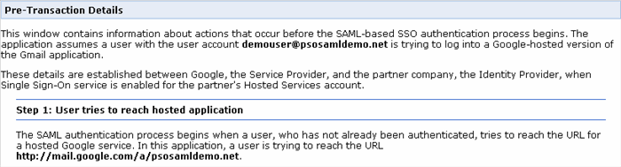
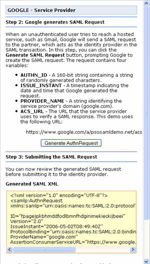

This document describes the static demo of a SAML-based single sign-on (SSO) service that logs users in to Google Apps. This demo simulates the transactions that Google and a partner company would conduct to log a user into a Google Apps application, such as Gmail. The static demo demonstrates the process of logging a user with the username demouser into the domain psosamldemo.net. In the demo, Gmail represents a service that Google is hosting for the psosamldemo.net domain.
The static demo can be found here.
The static demo displays the steps of the SAML workflow process in three windows. In addition, after you complete step 6 in the demo, a new window launches to execute the final two steps in the process.
The Pre-Transaction Details window appears at the top of the page and contains information about the precursors to the SAML authentication process. This window displays the actions that a partner needs to take to set up the SSO service as well as the user's attempt to reach the Google-hosted service.
Setup operations represent the partner's efforts to establish an SSO service. These operations include setting the URL for the partner's SSO service. (Please note that for the static demo, the partner service does not actually exist. Instead, the static demo assumes that the user is successfully authenticated and generates a SAML response indicating that authentication was successful.
Setup operations also include the partner obtaining public and private RSA or DSA keys that will be used to encode the SAML response from the partner service to Google. For the static demo, the public and private keys are read from files included in the SAML reference package. To implement your own SAML-based SSO service, you will need to create your own RSA or DSA keys and then register the public key with Google. Google accepts either the DER-encoded public key or an X509 certificate containing a public key.
Step 1 displays the user's attempt to access a Google hosted service. The static demo assumes the user is trying to access a hosted Gmail account for the user demouser@psosamldemo.net.
The screenshot below displays the Pre-Transaction Details window.

The GOOGLE - Service Provider window appears on the left side of the page below the Pre-Transaction Details window. This window displays actions that Google takes in the user authentication process.
In step 2, Google generates a SAML authentication request (AuthnRequest). By clicking the button, you instruct the static demo to display the SAML request that Google would submit to the partner's SSO service. Click the Generate AuthnRequest button to complete step 2.
In step 3, a window appears that displays the generated SAML request, allowing you to review the generated XML. A second window displays the URL to which the SAML request will be submitted. Click the Submit AuthnRequest button to complete step 2.
The screenshot below displays the GOOGLE - Service Provider window.

The PARTNER - Identity Provider window appears on the right hand side of the page below the Pre-Transaction Details window. This window displays actions that the partner executes in the user authentication process.
In step 4, the partner parses and decodes the SAML request. The partner then proceeds to authenticate the user. The static demo does not actually authenticate a user. Instead, the demo parses the request and then behaves as though the user were successfully authenticated.
In step 5, the partner generates a SAML response. Click the Generate SAML Response button to complete step 5.
Step 6 displays the generated SAML response, which is similar to the XML that your SSO service will need to return to Google's ACS. Click the Submit SAML Response button to complete this step.
The screenshot below displays the PARTNER - Identity Provider window.

Additional steps - By clicking the Submit SAML Response button, you will launch a new window that will display the demouser@psosamldemo.net Gmail account.
The demo will actually submit the XML request to Google, and Google will validate the SAML response using the public key specified in the setup operations.
Google will then log you in to Gmail and redirect you to the demouser@psosamldemo.net Gmail account.
The screenshot below displays the hosted Gmail account.